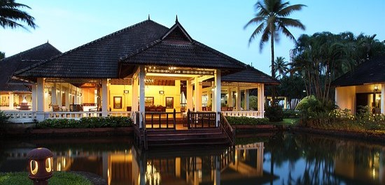

Kumarakom · Backwaters
Abad Whispering Palms
A serene lakeside resort in Kumarakom featuring traditional Kerala architecture, lush gardens, an Ayurvedic spa, and peaceful backwater views for a relaxing escape.
From ₹9,000 / night
Details →